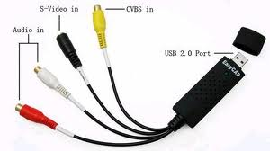
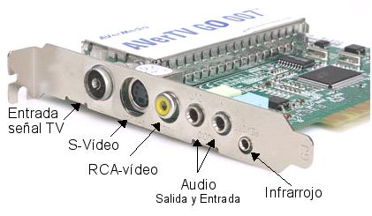
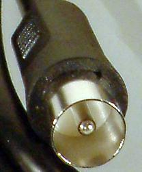
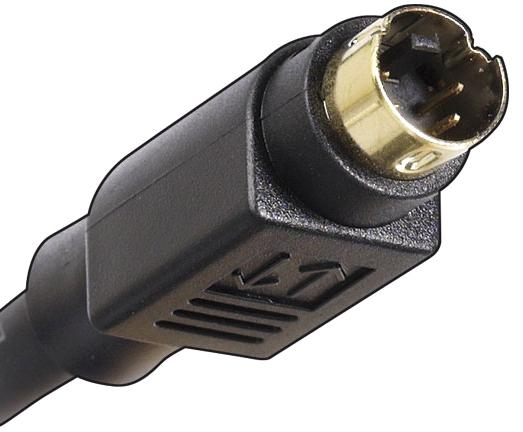
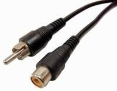
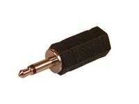
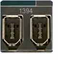
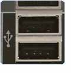
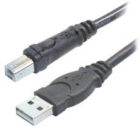
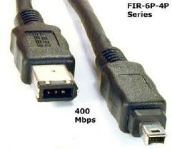

7.1.2. Digitalización del video
| Digitalización del vídeo |
|
Durante dicha conversión la imagen y sonido de formatos análogos o digitales pasan a través de nuestros equipos de alta calidad para ser editados y preparados a su nuevo formato superior en DVD. Para poder digitalizar un vídeo analógico será necesario disponer del hardware y el software necesario para realizar el proceso de conversión. Ésta es la misión de una tarjeta digitalizadora o tarjeta capturadora de vídeo (imagen inferior izquierda) que disponen, básicamente, de los siguientes conectores:
|
|  |
|
| Modelos de Conectores para capturar la imagen Analógica |
| 
BNC macho S-Vídeo macho RCA-vídeo Minijack |
|
Actualmente se ha extendido el uso de cámaras de vídeo digital que presentan la ventaja de grabar vídeo en formato digital y no analógico, pudiendo ser transferido directamente al ordenador sin necesidad de utilizar una tarjeta capturadora de vídeo. Para transferir vídeo digital al ordenador se utilizan los puertos de alta velocidad del ordenador, USB o Firewire, siendo el firewire el más utilizado. En la imagen inferior el puerto USB (izquierda) y firewire (derecha) y sus respectivos cables de interconexión. |
|
 |
|  |
Este artículo está licenciado bajo Creative Commons Attribution-NonCommercial-ShareAlike 2.5 License
Jo.R.C.A. 2004 - 2010

Edición de Audio y Video con Software Libre by José Ramón Cerdeira Alonso is licensed under a Creative Commons Reconocimiento-No comercial-Compartir bajo la misma licencia 3.0 España License